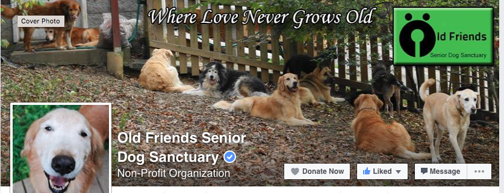
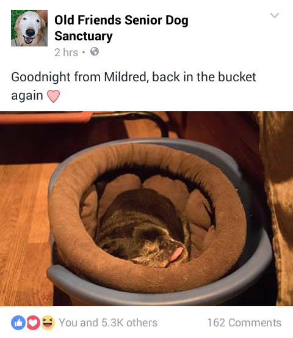

This a site containing five of the weirdest forums I've ever found. Be warned, it's about to get weird.
The Senior Dog Sanctuary Facebook page is my favorite forum of sorts, and also the least weird/strange/horrifying. The page is for a Sanctuary that takes in older dogs and lets them live out their days happily playing with other senior dogs. The community that follows this page is adorable old people who love to leave amazing comments that make it seem like the dogs can respond back.
